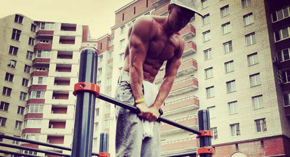
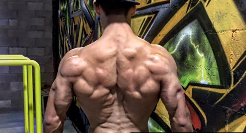
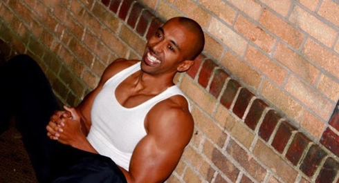

Unlike many people who think that body-weight exercises consist only of push-ups and chin-ups, you are already know that there's a huge variety of exercises that allow you to increase the training load in a very wide range.
Surely enough, it is impossible to encompass even one-tenth of all that information we might need as part of the 100 Days Workout program, but we'll try our best to give you the foundation to build off from on your own. Remember, there are four things to do in order to be successful:
1. Think
2. Train
3. Eat
4. Rest
If any of the above goes missing you are not likely to achieve your goal.
Firstly, you don't progress during your training sesions, but you progress during the rest period after them! Your muscles become stronger, fitter, etc.
Secondly, dieting is an absolute must, no matter how hard you train. If you don't follow a strict diet then you are significantly lowering the chances of achieving your goals. Imagine that your body is a car and you need to get from point "A" to point "B". This will be peach easy, if you are filling your car with proper fuel, if, however, you choose to feed your car with something else, it will not take you anywhere.
Thirdly, you have to train. Training stimulates your body's growth. But, make sure to remember, if you want to progress, your training has got to be really stressful and challenge our body. Remember that for the past several thousand years our body has learned well to adapt to changing circumstances. And our body is really, really good at doing so. Make sure to keep a close eye on your training routine then.
Forthly, you will have to think much. Like really, really much. You know it all too well that there isn't any magic pill, ground-breaking programs or wonderful machines to get you slim and shredded. There's always hard and yet intelligent work behind any results. Not only will you have to train but also analyze what you are doing, especially whenever your progress is slowing down or whenever you hit a plateau in your results.
Your results and the way you look are the product of what you are doing, so if there's some role model for you out there, try not only repeating after that person, but also think deeper to comprehend the why's, the what's and the what for's. Your next step would be to adapt your role model's training routine to your needs.
Remember that only HARD WORK yield good result. We have compiled several training plans for you here, that are followed by the famous and very strong workouters, to illustrate what the HARD WORK really is.
Max True

Pull-ups
- 5 sets, 1-minute rest-time, total number of chin-ups: no less than 100
- Rest and stretching: 15 minutes
- 6 sets of pull-ups, 1-minute rest-time, total number of chin-ups: no less than 100
- Rest and stretching: 15 minutes
- 100 pull-ups in 5-6 sets, rest-time 3 minutes in between the sets
NIKO (X.T.R.A. Team)

Pull-ups - 30
Dips - 30
Push-ups - 30
Pull-ups - 20
Dips - 20
Push-ups - 20
Pull-ups - 10
Dips - 10
Push-ups - 10
Pull-ups - 20
Dips - 20
Push-ups - 20
Pull-ups - 30
Dips - 30
Push-ups - 30
Rest between each exercise - no more than 10 seconds.
Vadym Oleynik

10 High Pull-ups
10 Deep dips
10 Front lever raises
6 One arm pull-ups (each arm)
Repeat 3-5 times without rest between circles.
Zef Zakaveli

Rest no more than 60 seconds betwee sets.
1 muscle-up, 5 pull-ups
2 muscle-ups, 4pull-ups
3, 3
4, 2
5, 1
Reverse the order
1 pull-up, 5 muscle-ups
2 pull-ups, 4 muscle-ups
3, 3
4, 2
5, 1
In the end of the training try repeating the 1 chin-up x 1 muscle-up combo for 6 times (12 repeats in total in 1 set (!)). If at some point you are okay with pulling it up, but can't perform a muscle-up, make sure to do one extra chin-up on your next time.
Remember to taking it really slow. If a newbie tries his hand at such training routine as above, he won't make it even half-way through (that's another blast at the ready-made programs which are strewn across the internet and fitness magazines!). But at the same time, impressive training volume and variability are the things so many training schemes need badly. Probably this is the reason why they do not achieve desired results.
Remember we had an infopost about the optimal result? It takes very little effort to achieve first positive changes (and this is the thing so many motivational quotes are based off). But the farther you go on the path to your dream body - strong, fit and beautiful, the harder it is to achieve yet another addition. You can learn to do the pull-ups in two-to-three weeks. However, it will take you considerably more to do the muscle-up - several months' to one year (depending on your baseline characteristics).
Thing is, the guys we see in all these movie clips, who are into some really crazy stuff, have the same difficult times during their training sessions as you do during yours. It is really hard for them to do the last reps and sets. The only difference is that their training is insanely impossible for the ordinary people.
If, at some point, 6 sets with 10 reps become a pleasant warm-up for you, then this is the end of your progress. You have to set new challenges, well-dozed and timely, to keep progressing. It should never be easy, not today, not tomorrow, not after one year in training.
Remember that you also change from day to day. Things which were not suitable for you at the beginning of a 100 Days Workout program (for example, our advices: do not change your grip, do not do any abs isolation exercises, do not run long-distances before the training) will eventually become a must for your futher progress. So, keep it in mind: the farther you are from the beginner, the more specific you become (some groups of muscles are growing better than the others, your joints are getting stronger and more flexible, you begin to develop permanent injuries and 'weak spots'). Which, in its own turn means that you'll steer away from general advice.